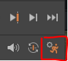
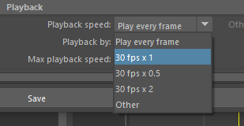
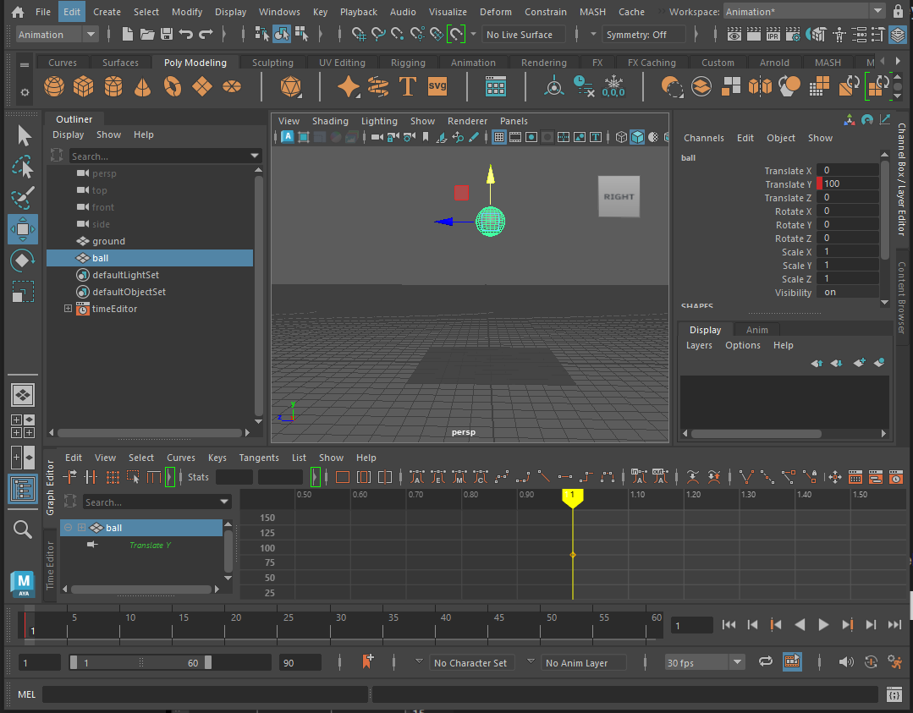
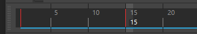
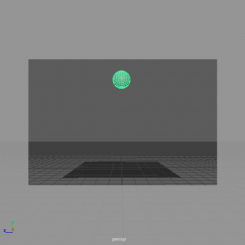
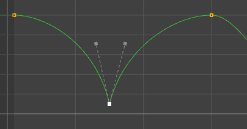
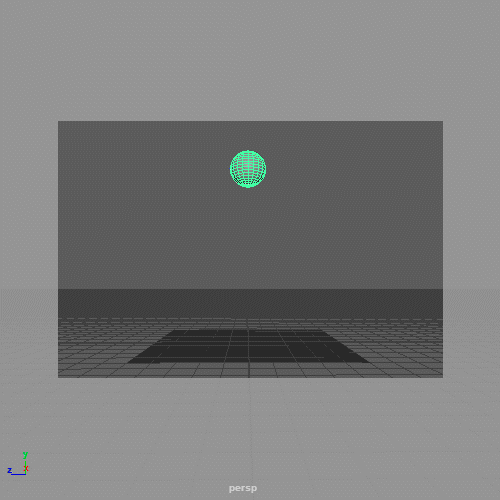
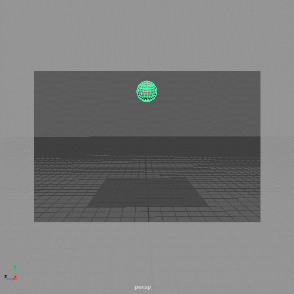

This worksheet covers the fundamental skills needed to animate in Maya.
Double click on the polygon sphere button
Make sure you name the new texture appropriately and you can see it in the ball.
(HINT: With the ball selected right click and choose "Assign new material" )
Now that we have set up our scene we can start to animate.
When animating it will be helpful to have access to different panel.
On the right we have the channel box this is where we can keyframe the properties we want to animate.
At the bottom of the screen is the range slider, this is where we change the settings for the animation
Above this is the timeline, this shows us which frame we are currently looking at and where we have set keyframes on the selected object.

Finally, we have the graph editor, this shows how each keyframe transitions to the next.
We will use all these panels in the worksheet.
We want the animation to run at 30 frames per second (FPS) and the total animation to be a 3 seconds long.
Move the slider to the far left, and change the right hand number to 60. This shows the range currently viewable in the timeline above (frame 1 - 60, which equates to 2 seconds of time).
Lastly, click on the time slider preferences button in the bottom right to open the panel


Now that we have set up the workspace we can start to animate.
-To set a key frame, right click on Translate y in the channel box and select Key selected
The property should turn red to indicate that it has a key frame, you should also see a red line on the timeline on frame 1.

Move the ball down so that it is just touching the ground, it may be helpful to go into the side view but it should be 10 as that is the radius of the ball.
Keyframe the ball again by right clicking on the Translate Y property in the channel box and choosing Key selected.
You should now have 2 red lines on the time line indicating 2 keyframes.

You can now set the last few keyframes on your own, we want the ball to bounce twice, so set the following:
You can now play your animation by clicking on the play button to the right of the timeline (shortcut is alt/option + v)

Make sure yours looks like the animation above, if not work out where you went wrong.
Closely watch your animation, it should be going up and down but it doesn't really look like its bouncing. Why does it look wrong?
With the ball selected, hover over the graph editor and press f on the keyboard so that the complete graph fills the panel.
The yellow diamonds show where you have set keyframes, the green line shows where Maya has created a smooth transition between the keyframes.
To make the bounce more realistic we want to edit this line to create a sharp change of direction on the bottom where it hits the floor and increase the curve on the top.
You can move the handles around to change the shape of the curve, but we want to move them around independently.

We can now move each handle independently but we also want to change the length so we have full control.

play the animation again to see the result.

This is one of the most important principles in animation.
When an object moves or collides with something it will deform.
If your object is made of a rubbery or flexible material it will deform more.
firstly, we want the ball to stay spherical at the top of the bounce.
We can now keyframe the squash when it hits the ground.
To conserve the balls volume, this means we need to simultaneously stretch it horizontally
You should notice that the ball now doesn't hit the ground.
Do the same for the second bounce at frame 45 and then look at your animation.
Why does it look wrong now? How can we fix it?

We have a similar issue as before, Maya is smoothing out the transition between keyframes so the ball starts to squash as it falls.
To fix this we need the ball to remain spherical until just before it hits the ground.
On frame 14, just before the ball hits the ground, key the x, y and z scale of the ball to 1.
Do the same thing on frame 44.
You also need to key frame the scale a few frames after the bounce so it returns to its original shape quicker.
We now have a basic ball animation and you have covered all the basic skills of animating simple object in Maya.
Add a keyframes to translate x or translate z to move it sideways as it bounces.
Try changing the amount you squash and stretch the ball, can you make it look like its made of a harder material?
What happens if you rotate the ball so that it spins as it move? consider how you may animate this in a different order next time to fix any issues.